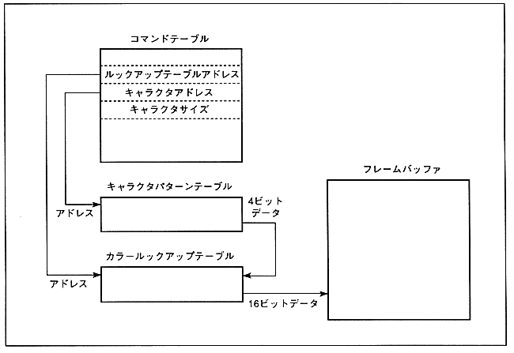

Specify the address of the color lookup table referenced by the sprite as the color lookup table address (start address + 06H) of the command table. The specified value is address / 8H. Since the color lookup table is stored in the 20HByte boundary, the lower 2 bits are 00H.
The relationship between the command table, color lookup table, and character pattern table is as follows.
Figure 5.3 Lookup table type table relationship
